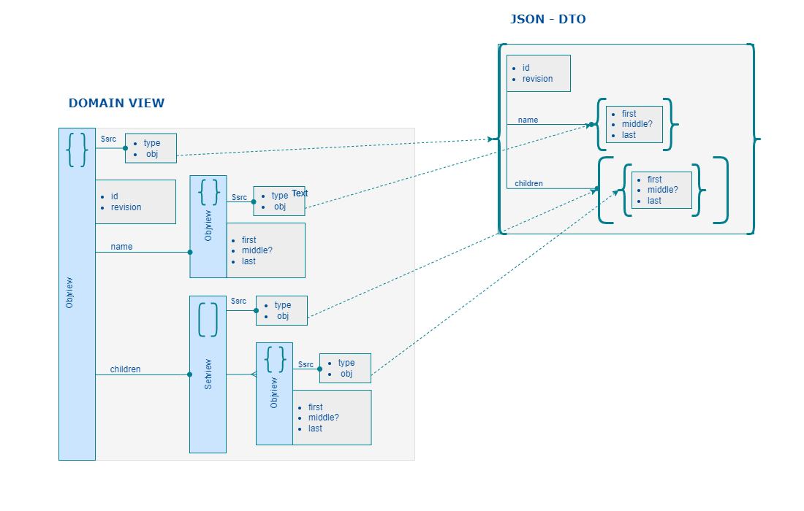

A Domain Model is supposed to be an hierarchy of View Element describing a Business Concept.
On simple case a Domain Model can rely on a single View Element.
The Root Element is either an Object or an Array or a Map.
Modeling Domain Model is a list of Type definitions relying on 3 declaration :
1- the typescript Data interface, 2- the Type Element relative to this interface

import {IViewElement, ObjectDef, Objview, Setview, Tarray, Tobject} from "joe-fx";
import {t} from "joe-types";
/* -----------------------------------------------
* PersonName (Domain Element)
* ----------------------------------------------- */
export interface PersonNameData {
firstName: string;
middleName?: string;
lastName: string;
}
export const PersonNameDef: ObjectDef<PersonNameData> = {
type: 'object',
title: 'PersonName',
properties: {
firstName: t.string.name,
middleName: t.string.name,
lastName: t.string.name
},
required: ['lastName', 'lastName'],
index: {
id: ['lastName', 'firstName'],
sort: ['lastName', 'firstName']
}
};
export const PersonNameType: Tobject<PersonNameData> = new Tobject<PersonNameData>(PersonNameDef);
export const PersonNameListType: TArray<PersonNameType> = new Tarray<PersonNameData>(PersonNameType);
export class PersonNameView extends Objview<PersonNameData> implements NameRefData {
declare firstName: string;
declare middleName: string;
declare lastName: string;
constructor(entity?: any, parent?: IViewElement, type?: Tobject<X extends PersonNameData> ) {
super(type ?? PersonNameType, entity, parent);
}
}
PersonNameType.viewctor = PersonNameView;
/* -----------------------------------------------
* PersonDoc (Domain Model)
* ----------------------------------------------- */
export interface PersonDocData {
id: string;
revision: string;
name: PersonNameData;
children: PersonNameData[];
}
export const PersonDocDef: ObjectDef<PersonDocData> = {
type: 'object',
title: 'PersonDoc',
properties: {
id: t.string.id,
revision: t.string.word,
name: PersonNameType,
},
required: ['id', 'revision', 'name'],
index: {
id: 'id',
rev: 'revision'
sort: ['name>lastName', 'name>firstName']
}
};
export const PersonDocType: Tobject<PersonDocData> = new Tobject<PersonDocData>(PersonDocDef);
export class PersonDocView extends Objview<PersonDocData> implements PersonDocData {
declare id: string;
declare revison: string;
declare name: PersonNameView;
declare children: Setview<PersonNameView>;
constructor(entity?: any, parent?: IViewElement, type?: Tobject<X extends PersonNameData> ) {
super(type ?? PersonDocType, entity, parent);
}
}
PersonNameType.viewctor = PersonDocView;